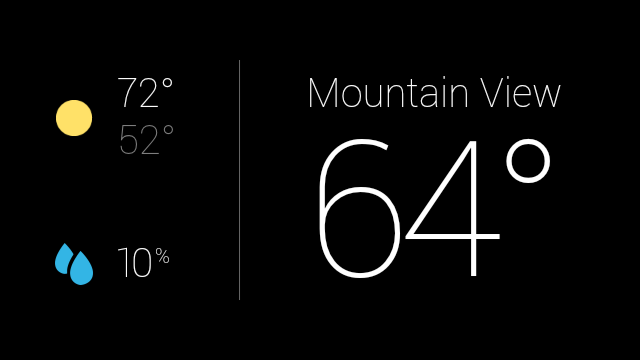
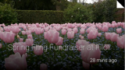
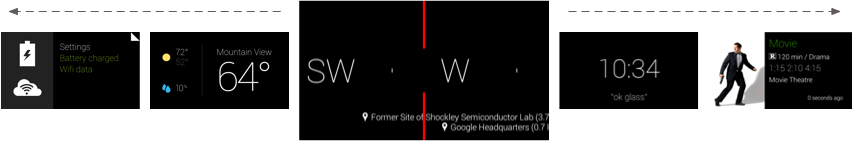
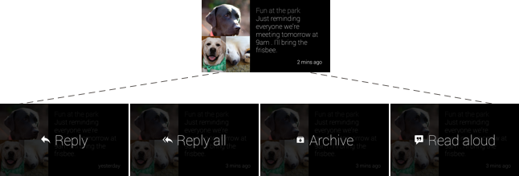
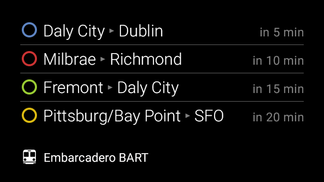

Introduction
GlassKit is a modern revival of the original Google Glass Explorer Edition. This is accomplished by providing up-to-date information on how to revive your Glass with XE24, how to restore some of the original functionality, and how to build Glassware yourself!
Contributing
GlassKit is a free and open source project. The code is on GitHub, as well as issues and feature requests.
Questions and Concerns
If you have any questions or concerns, please send an email to glasskit@jordanreger.com.
View our GitHub page or our Bento box!
Getting Started
Getting started with your Glass is fairly complicated, but don't let it phase you! Below is an incomplete tutorial on how to get your Glass up and running.
Installing XE24
This is a bit confusing as the instructions have changed over the years, and practically every revision recently doesn't really work. The instructions on this page are a great starter, but some things don’t work. Here’s a (hopefully) decent walkthrough.
Android Studio + Google USB Driver
- Make sure to have Android Studio installed
- In the
toolsmenu of Studio, go to the SDK manager and select the SDK Tools tab. - Select the checkbox next to Google USB Driver and then click Apply and finally OK.
- Reboot the computer to make sure that it's installed.
Allow Unsigned Drivers
This will allow us to temporarily disable driver signature enforcement. This only works in Windows.
- Click the Start button, hold
Shiftand clickRestart - Once it reboots, go to Troubleshoot > Advanced options > Startup settings > Restart
- Press
F7to disable driver signature enforcement - Open CMD as an administrator
- Type
bcdedit /set testsigning onand press Enter
Editing the Driver
I would recommend following this tutorial for the rest of the process.
You must edit the driver in both regular mode and fastboot; otherwise
adbwill not recognize the device.
Entering Fastboot
To enter fastboot, you must enter Recovery Mode by holding down the camera button, tapping the power button once, and then continuing to hold down the camera button for 10 seconds. Once you do this, you will see a menu with 4 options, but we want to choose Reboot into fastboot.
Successful Installation of XE24
Congrats! You've successfully installed XE24 and you're ready to start using Glassware. At the moment, it's a bit of a technical process; we're working on it though! For now, join the Discord and a member of the community will be able to help you if you need it.
Developing Glassware
Developing Glassware is actually quite easy, due to the Google Glass being an Android device. It still takes some care, as it's not a new device and it's certainly not a "normal" one. The following guide (the Hello Glass tutorial) will help you get accustomed to modern Android development for a device that's not so modern.
Hello Glass Tutorial
Introduction
Before we start; if your Glass isn't set up yet, view this page. Otherwise, this assumes that your Glass is set up, you have at least a little bit of technical/programming knowledge, and you're ready to go. If you'd like to take a look at the fully set up project or take the app for a spin, check out the HelloGlass GitHub repository.
Getting started
First, let's initialize a new Empty Activity project with the Minimum SDK set to API 19: Android 4.4 (KitKat). Wait for a bit for it to get itself set up, and then we're ready to move on.
Importing the GDK
To get started, please download the original GDK - here's the source if you ever want to take a look: GlassKit/gdk - and drag it into the app/libs folder (which can be found by switching the tab at the top left from Android to Project). If the libs folder isn't in the app directory, you will have to make it.1 Finally, right click on gdk.jar in the libs folder and select Add as Library from the menu to be able to use it in your project. You will now be able to use the old GDK in whatever version you're using!
Changes to the default project
Below are a few changes we need to make before we're ready to run:
AndroidManifest.xml
At the path app/manifests/AndroidManifest.xml, we're going to tweak just a couple things. Replace the <activity></activity> with what's below:
<activity
android:name="com.{your name}.{project name}.MainActivity"
android:enabled="true"
android:exported="true">
<intent-filter>
<action android:name="com.google.android.glass.action.VOICE_TRIGGER" />
</intent-filter>
<meta-data android:name="com.google.android.glass.VoiceTrigger"
android:resource="@xml/show_me_a_demo" />
</activity>
As mentioned here on step 4, to make sure you don't blind yourself, remove the following line inside the first <application> tag:
android:theme="@style/Theme.{project name}"
MainActivity.java
At the path app/java/com.{your name}.{project name}/MainActivity.java, we need to change the whole file, essentially. Copy and paste the following in, replacing what's there already:
package com.{your name}.{project name};
import android.app.Activity;
import android.os.Bundle;
public class MainActivity extends Activity {
@Override
protected void onCreate(Bundle savedInstanceState) {
super.onCreate(savedInstanceState);
setContentView(R.layout.activity_main);
}
}
activity_main.xml
At the path app/res/layout/activity_main.xml, we're going to replace everything once again with what's below:
<?xml version="1.0" encoding="utf-8"?>
<FrameLayout
xmlns:android="http://schemas.android.com/apk/res/android"
android:layout_width="match_parent"
android:layout_height="match_parent">
<TextView android:id="@+id/textView"
android:layout_width="match_parent"
android:layout_height="match_parent"
android:gravity="center"
android:text="Hello Glass!" />
</FrameLayout>
show_me_a_demo.xml (new)
We must make a new file at the path app/res/xml entitled show_me_a_demo.xml, and inside is:
<?xml version="1.0" encoding="utf-8"?>
<!-- https://developers.google.com/glass/develop/gdk/reference/com/google/android/glass/app/VoiceTriggers.Command -->
<trigger command="SHOW_ME_A_DEMO" />
Final steps
To get your code to run on your Glass, you must first navigate to Run > Edit Configurations and then at the bottom under Launch Options, set the Launch parameter to be Specified Activity instead of Default Activity. Below, select com.{your name}.{project name}.MainActivity and then hit Apply.
You should be able to build and run now!
Footnotes
The GlassKit team is working on refactoring the Hello Glass repository for easier startup. This includes adding the GDK and lib folder automatically, regardless of the fact that it doesn't need it at the moment.
Glass Development Kit
The Glass Development Kit (shortened as GDK) is an Android sub-library that contains Glass-specific development tools.
todo: finish page
Downloading Glassware
The GlassKit team is currently working on porting all of the old gdk-samples and other basic applications.
Glass Explorer Edition
Build Glassware that is available at a user's glance on Glass. Developer overview
Design before you develop
Understand our design principles and patterns before you write a line of code. When you start coding, follow Glass patterns and style, when appropriate, to give users a consistent user experience.
Learn the design principles
These principles describe the core of a great Glass experience, so apply them when designing and building.
Choose a design pattern
We've come up with a few patterns that work well on Glass. Use them to create consistent experiences.
Use Glass style and templates
Use the provided UI guidelines and templates to help you design and build Glassware correctly.
Use the Glassware Flow Designer (not available)
Collaboratively design in our web-based tool to visualize your Glassware flow and get early design feedback from the review team.
Develop with Android-based APIs
The Glass development platform lets you write Android code that runs directly on Glass.
Build a pattern
Learn how to build some design patterns with end-to-end guides.
Explore the API docs
See all of the GDK features in the API reference docs.
Learn with samples
Get working Glassware and code snippets from the guides and samples.
Tools and Downloads
Get the right tools and resources you need to build Glassware.
Distribute to Glass users
Before you share your Glassware APKs, make sure you follow these best practices and guidelines.
Follow these best practices
Make sure you follow our best practices to ensure your Glassware runs smoothly.
Complete the launch guidelines
The guidelines describe some of the criteria to ensure the best user experience.
Connect with the community
Share your ideas with the rest of the Glass development community.
Design for Glass
A whole new design paradigm.
Design before you develop
Understand our design principles and patterns before you write a line of code. When you start coding, follow Glass patterns and style, when appropriate, to give users a consistent user experience.
Learn the design principles
These principles describe the core of a great Glass experience, so apply them when designing and building. Learn more
Choose a design pattern
We've come up with a few patterns that work well on Glass. Use them to create consistent experiences. Learn more
Use Glass style and templates
Use the provided UI guidelines and templates to help you design and build Glassware correctly. Learn more
Use the Glassware Flow Designer (not available)
Collaboratively design in our web-based tool to visualize your Glassware flow and get early design feedback from the review team.
Don't know where to start?
Check out our pattern guides that lead you through the process of designing, developing, and distributing your Glassware, based on a design pattern that we've found works well on Glass.
Principles
Glass is fundamentally different than existing mobile platforms in both design and use. Follow these principles when building Glassware to give users the best experience.
Design for Glass
 Users typically have multiple devices that store and display information for specific time periods. Glass works best with information that is simple, relevant, and current.
Users typically have multiple devices that store and display information for specific time periods. Glass works best with information that is simple, relevant, and current.
Don't try to replace a smartphone, tablet, or laptop by transferring features designed for these devices to Glass. Instead, focus on how Glass and your services complement each other, and deliver an experience that is unique.

Figure 1: Google+ on Glass shows a single card for each post, with a simple layout and most content behind a Read more menu item.

Figure 2: Google+ on phones and tablets shows a full stream of post with content inline.
Don't get in the way
Glass is designed to be there when you need it and out of the way when you don't. Your Glassware must function in the same way. Offer engaging functionality that supplements the user's life without taking away from it.

Figure 3: The Glass display rests just above your natural line of sight, allowing people to experience the world and access Glass when they need to. Google Search lets you find specific information in context.
Keep it relevant
Deliver information at the right place and time for each of your users. The most relevant experiences are also the most magical and lead to increased engagement and satisfaction.

Figure 4: Delivering a shopping list when users arrive at their favorite grocery store is an experience that is relevant and works well on Glass.
Avoid the Unexpected
Unexpected functionality and bad experiences on Glass are much worse than on other devices, because Glass is so close to your users' senses.
Don't send content too frequently and at unexpected times. Always make it clear to users what the intention of your Glassware is and never pretend to be something you're not.

Figure 5: Sending notifications when users don't want to see them is a bad experience. Be aware of time, frequency, and location when you are delivering information.
Build for people
Design interfaces that use imagery, colloquial voice interactions, and natural gestures.
Focus on a fire-and-forget usage model where users can start actions quickly and continue with what they're doing.

Figure 6: Messaging on Glass prioritizes images of people, lets you reply by speaking naturally, and sends automatically when you stop talking.
User Interface
This section goes over the major UI components of Glass, when they are useful, and how users interact with them.
The timeline controls most of the user experience
The timeline is the main user interface that is exposed to users and is comprised of 640 × 360 pixel cards. It provides many features such as a standard way to present live and static cards, system-wide voice commands, and a common way to launch Glassware.
Users scroll through different sections of the timeline to reveal cards in the past, present, and future. The most recent items reside closest to the Home card, which is the default card users see when they wake Glass up.
| Settings | Present/Future | Home | Past | |||
|---|---|---|---|---|---|---|
 |  |  |  |  |  |  |
The timeline is organized into sections
Timeline cards appear in the following sections, based on the card's temporality and type.
Home
The default Home card is the Glass clock and it resides in the center of the timeline. For the most part, it appears whenever users wake Glass up.
It provides system-wide voice and touch commands for users to start other pieces of Glassware. The Glass clock card never leaves the Home area of the timeline because it provides access to the entire Glass system.
Past
To the right of the Glass clock is the history section, which displays only static cards. This is because live cards are always considered to be in the present, so they never appear here.
Static cards naturally decay in the past section. As new cards enter the past section, they appear closest to the clock. Glass pushes older cards farther to the right where users rarely scroll and removes cards older than 7 days or when the 200 card limit is reached.
| | | |  |
Present and Future
To the left of the Glass clock is the present and future section, which contain both static and live cards.
Figure 1: Strava Cycling shows a live card that continuously updates the time, distance, and speed of a bike ride as it happens.
Live cards display information that is relevant to users at the current moment and always appear in this section. When a live card has focus and Glass sleeps, that card becomes the default card that appears when Glass wakes up.
Static cards that have future timestamps or are "pinned" also appear in the present and future section. Google Now cards are an example of pinned cards that
Figure 2: The Google Now weather card shows relevant information automatically.
Settings
At the farthest left of the timeline is the Settings bundle, where you can configure system-wide Glass settings, such as volume and Wi-Fi networks.
Live cards contain rich, real-time content
Live cards can update frequently with custom graphics to show users real-time information. This functionality is great for UIs that need to constantly update based on some user data.
Live cards also have access to low-level sensor data like the accelerometer and GPS, which unlocks new types of user interactions and features that aren't possible with static cards.

Figure 3: The Compass uses sensors and renders custom graphics to create a unique user experience.
In addition, live cards run inside the timeline, so users can scroll left and right to view and interact with other cards while the live card is running. This allows users to multitask and seamlessly maintain the live card's running state in the background.

Static cards display text, images, and video content
Static cards are simple chunks of information that you can build with HTML, text, images, and video. They do not update frequently, if at all, and are designed for quick notifications.
 | | |
Contacts allow users to share content with Glassware
Static cards can have a share menu item that allows users to share the card with people or other Glassware. You can declare your Glassware timeline cards to be shareable and also define a contact for your Glassware that can accept shared timeline items.
 |
Immersions offer a fully-customized experience
When you momentarily need full control over the user experience, immersions can run outside of the timeline experience. This allows you to render your own UI and process all of the user input. Immersions are great for Glassware that cannot function within the constraints of the timeline.

Menu items allow users to carry out actions
Both cards and immersions can contain menu items that carry out associated actions, such as sharing, replying, dismissing, and much more.

Patterns
Use common UX patterns to give users a consistent experience across all Glassware.
Here you'll learn about the basic building blocks to build these patterns along with examples of patterns that we feel work great on Glass.
Pattern building blocks
By using the major UI elements along with an invocation method, you can build a wide variety of usage patterns that work well on Glass. You can then combine multiple patterns together in your Glassware for the use cases that you require.
UI elements
- Static card - Displays text, HTML, images, and video. Static cards can invoke live cards or immersions.
- Live card - Displays cards that are important at the current moment, usually rendered at a high frequency.
- Immersion - Displays Android activities that take over the timeline experience.
Invocation methods
- ok glass touch or voice menu
- Contextual voice or touch menu on a timeline card
Voice invocation model
Voice commands are a major part of user interaction with Glass and allow users to do things hands-free, quickly, and naturally. How a voice command starts the interaction with users is an integral part of the Glassware experience.
We carefully select voice commands to include on the ok glass menu based on a set of criteria. See the voice command checklist for complete details about what we look for in a good voice command. In general, voice commands adhere to the following guidelines on Glass.
Focus on the action, not the agent
Voice commands should be based on what users want to do and not what Glassware is carrying out the action.
For instance "ok glass, take a picture" is preferred over "ok glass, start camera." Focusing on the action is a more natural way for user interaction and all of the main voice commands follow this guideline.
Decrease time from intent to action
Voice commands should carry out the action as quickly as possible.
For instance, "ok glass, listen to Led Zeppelin" starts playing music by default and doesn't force users to select options before playing.
Is colloquial and easy to say
Voice commands are natural sounding, are different enough from existing commands, and are at least two words. This lets us tune our voice recognition to work well with a wide variety of commands.
Is general enough to apply to multiple Glassware
To avoid clutter on the ok glass voice and touch menus, voice commands should work for multiple Glassware if necessary. In these situations, Glass automatically shows a menu with the names of the Glassware that can carry out the command.
For instance, "ok glass, play a game, spellista" is preferred over "ok glass, play spellista."
Patterns
Ongoing task
Ongoing tasks are long-running live cards that users leave and come back to frequently.
For example, the Stopwatch sample that is shipped with the GDK starts the stopwatch with an ok glass command.
Users can view the stopwatch for some time, navigate through the timeline to check other cards, and come back to the stopwatch. If the display sleeps, the stopwatch is the default card that displays when the display wakes up (as long as it had focus when the display went to sleep). Users can stop the stopwatch by tapping on a Stop menu item.
Note: All live cards must have a Stop menu item (or similar) to dismiss the card.

Another example of an ongoing task is Strava. Strava inserts a live card that contains a timer for a current run or bike ride. Tapping on the live card reveals menus to carry out a wide array of options. A finish menu item removes the live card from the timeline when users are finished with their run or bike ride.

Immersion
This pattern describes displaying immersions in the form of Android activities. Immersions take over the timeline experience momentarily and users return back to the timeline by swiping down.

Periodic notifications
This pattern describes inserting static cards in the timeline without an invocation model. Your service delivers notifications based on settings that the user defines. For example, delivering top news stories every hour or emails as they are received.
Notifications leverage Mirror API web services or Android background services on Glass to push notifications to the timeline.
![[periodic-notifications-pattern.png]]
Style
Glass has a unique style, so we provide standard card templates, a color pallete, typography, and writing guidelines for you to follow whenever possible.
Before designing any custom layouts, use the available CardBuilder Layouts [TODO: ADD LINK] provided by the GDK to give users a consistent user experience. If none of these layouts meet your requirements, follow the guidelines below in your design.
Metrics and Grids
The Glass user interface has standard layout and margin guidelines for different types of timeline cards. Cards normally have the following general regions, and we've laid out some guidelines for you to follow for a general set of cards.
Card regions
Glass defines dimensions for a set of common regions to make it easy to design and display different cards consistently.

Main Content The main text content of the card is in Roboto Light with a minimum size of 32 pixels and is bounded by padding. Text that is 64 pixels and larger uses Roboto Thin.
Footer The footer shows supplementary information about the card, such as the source of the card or a timestamp. Footer text is 24 pixels, Roboto Regular, and white (#ffffff) in color.
Full-bleed image Images work best when full-bleed and do not require the 40px of padding that text requires.
Left image or column Left image or columns require modifications to padding and text content.
Padding Timeline cards have 40 pixels of padding on all sides for the text content. This allows most people to see your content clearly.
Layout templates
The GDK provides various CardBuilder Layouts [TODO: ADD LINK] that you can use.
Color
Glass displays most text in white and uses the following standard colors to denote urgency or importance. You can make use of these colors for your timeline cards as well:
| CSS Class | RGB Value |
|---|---|
| white | #ffffff |
| gray | #808080 |
| blue | #34a7ff |
| red | #cc3333 |
| green | #99cc33 |
| yellow | #ddbb11 |
Note: if you apply these CSS styles to your HTML timeline cards, Glass renders them automatically with the correct color. Glass uses the base_style.css file to render HTML cards.
The following example uses colors to denote important information about train lines and status.

Typography
Glass displays all system text in Roboto Light, Roboto Regular, or Roboto Thin depending on font size. If you're creating live cards or immersions, feel free to use different typography to convey your own branding.
Roboto Light
Glass displays most text in this font.
Editor's note: this is not actually Roboto Light. If for some reason you happen to want it very badly, submit a pull request.
ABCDEFGHIJKLMN OPQRSTUVWXYZa bcdefghijklmnopqrstuvwxyz1234567 890!?/+-=()[]#@$
%^&*<>:;”
>
Roboto Regular
Glass displays footnote text in this font.
Editor's note: this is not actually Roboto Regular. Hopefully you see the pattern.
ABCDEFGHIJKLMN OPQRSTUVWXYZa bcdefghijklmnopqrstuvwxyz1234567 890!?/+-=()[]#@$%^&*<>:;”
Roboto Thin
Glass displays larger text (64 px and above) in this font.
Editor's note: ...
ABCDEFGHIJKLMN OPQRSTUVWXYZa bcdefghijklmnopqrstuvwxyz1234567 890!?/+-=()[]#@$%^&*<>:;”
Editor's note: I'm very sorry about the size of the text, and if it breaks the site. This is actually how it showed up on the original site. Don't believe me? Check it out
{kind=link}
Dynamic text resizing
When using the CardBuilder.TEXT [TODO: ADD LINK] and CardBuilder.COLUMNS [TODO: ADD LINK] layouts, Glass uses the largest font size possible based on the amount of content. The following cards show examples of the typography characteristics of text based on the amount of text.


Writing
You have limited space for text, so follow these guidelines when writing text for Glassware.
Keep it brief. Be concise, simple and precise. Look for alternatives to long text such as reading the content aloud, showing images or video, or removing features.
Keep it simple. Pretend you're speaking to someone who's smart and competent, but doesn't know technical jargon and may not speak English very well. Use short words, active verbs, and common nouns.
Be friendly. Use contractions. Talk directly to the reader using second person ("you"). If your text doesn't read the way you'd say it in casual conversation, it's probably not the way you should write it.
Put the most important thing first. The first two words (around 11 characters, including spaces) should include at least a taste of the most important information in the string. If they don't, start over. Describe only what's necessary, and no more. Don't try to explain subtle differences. They will be lost on most users.
Avoid repetition. If a significant term gets repeated within a screen or block of text, find a way to use it just once.
Patterns
These guides lead you through how to build well-designed Glassware that follows patterns that we think work well on Glass. The patterns are not an exhaustive list of ways to build Glassware, but describe the most common ones.
Choose a design pattern
If you haven't already, check out the design patterns overview to get an idea of what each pattern is and when to use them.